?falls=v1)?falls=v1; flag off is the old pose.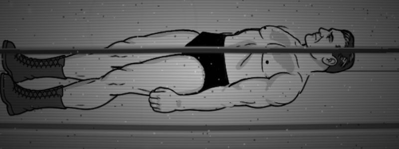
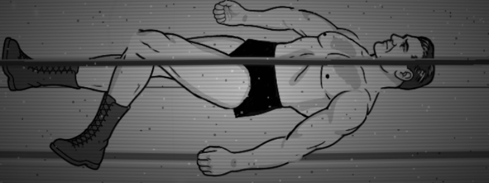
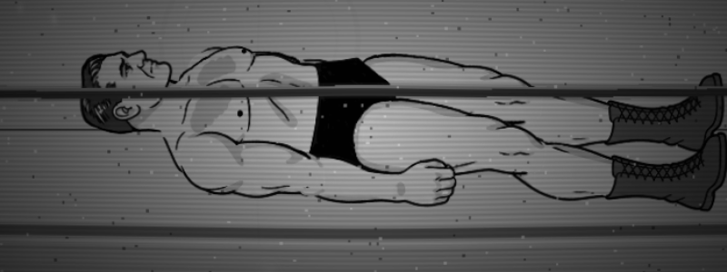
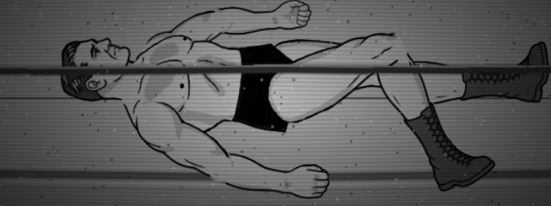
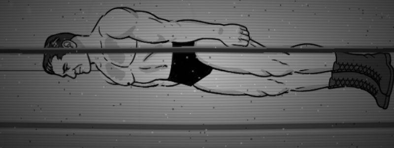
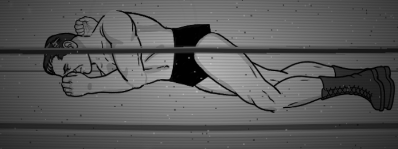
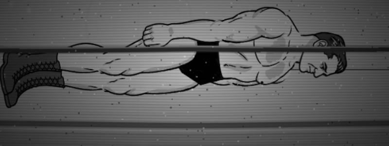
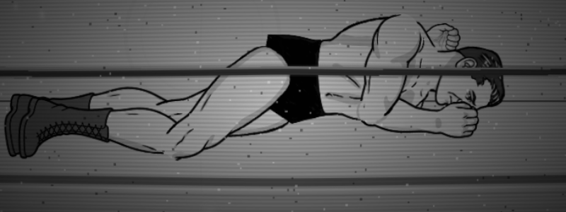
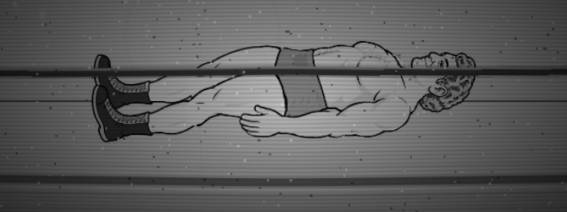
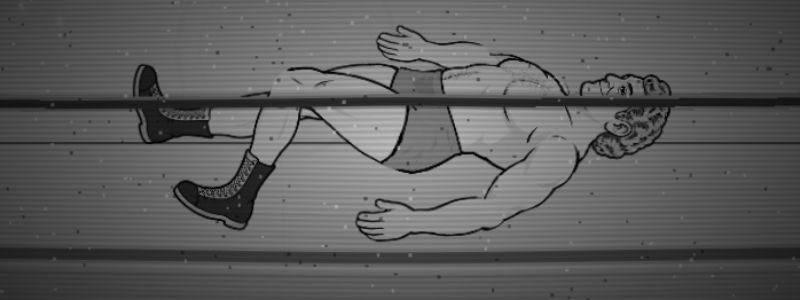
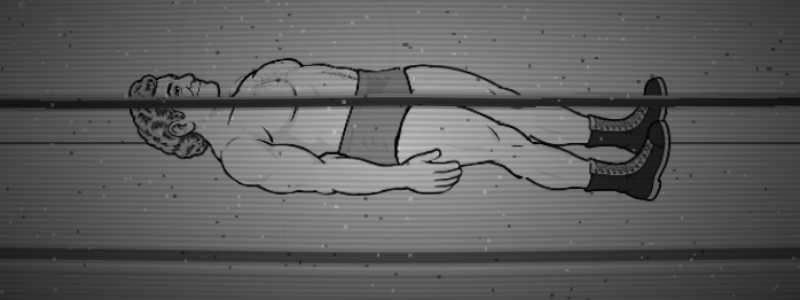
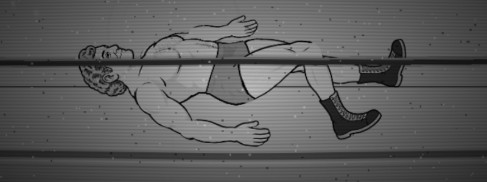
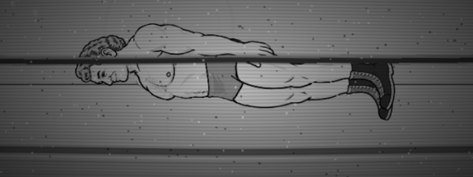
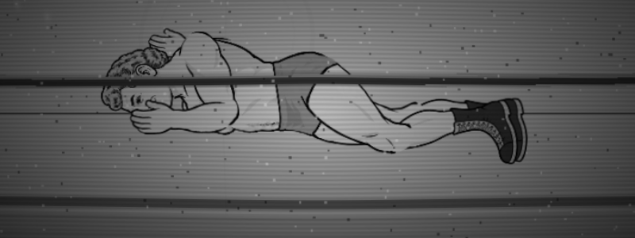
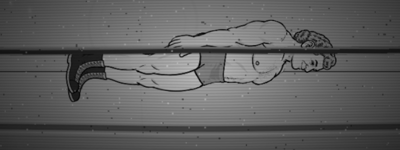
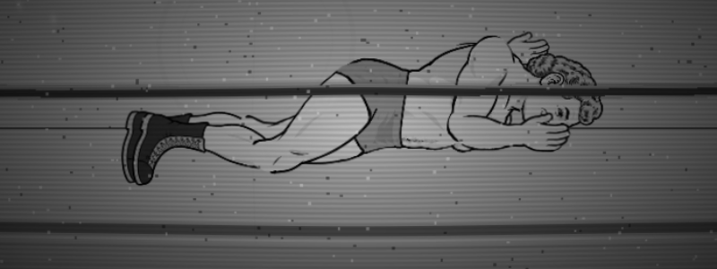
| path | victim | arms off the torso at rest, before (°, near / far) | after | wrist above the mat line before (px, near / far) | after | rest pelvis (px) | step into down (px) | get-up first frames step (px) |
|---|---|---|---|---|---|---|---|---|
| backward | lou | 5.7 / 2.6 | 21.1 / 15.4 | -18.1 / 16.4 | -37.9 / 36.8 | 7.1 → 7.1 | 3.55 → 4.13 | 5.5 → 13.5 |
| backward | george | 8.4 / 5.2 | 26.8 / 16.5 | -13.6 / 15.6 | -30.9 / 33.9 | 9.1 → 9.1 | 3.14 → 3.65 | 3.9 → 1.1 |
| forward | lou | 0.8 / 2.3 | 58.7 / 47.5 | 20.7 / -4.0 | -9.0 / 26.8 | 7.1 → 7.1 | 15.68 → 21.36 | 1.1 → 1.3 |
| forward | george | 0.6 / 3.8 | 81.1 / 71.5 | 23.8 / 2.2 | -4.1 / 31.1 | 9.1 → 9.1 | 9.14 → 15.74 | 0.7 → 1.0 |
| bodySlam | lou | 5.7 / 2.6 | 21.1 / 15.4 | -18.1 / 16.4 | -37.9 / 36.8 | 7.1 → 7.1 | 13.24 → 13.24 | 0.7 → 0.7 |
| bodySlam | george | 8.4 / 5.2 | 26.8 / 16.5 | -13.6 / 15.6 | -30.9 / 33.9 | 9.1 → 9.1 | 19 → 19 | 0.8 → 0.8 |
| piledriver | lou | 0.8 / 2.3 | 58.7 / 47.5 | 20.9 / -4.0 | -9.1 / 27.1 | 7.2 → 7.2 | 4.49 → 4.49 | 0.7 → 0.8 |
| piledriver | george | 0.6 / 3.8 | 81.1 / 71.5 | 24.1 / 2.2 | -4.2 / 31.4 | 9.2 → 9.2 | 6.44 → 6.44 | 0.4 → 0.6 |
Wrist heights are against the wrestler's y, not a contact line (see misses). Rest read with the sell cleared. Sell reach and step numbers: Lou, George. Probe data: summary.json.